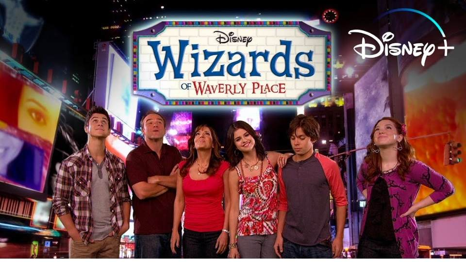
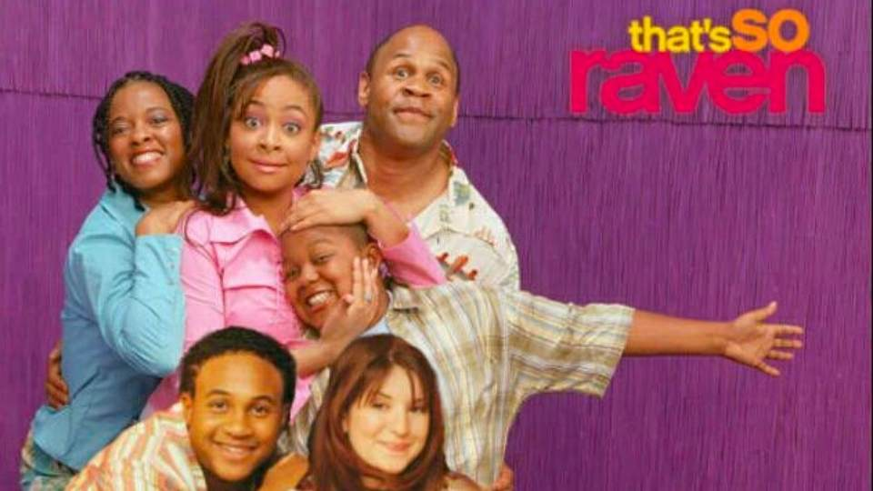
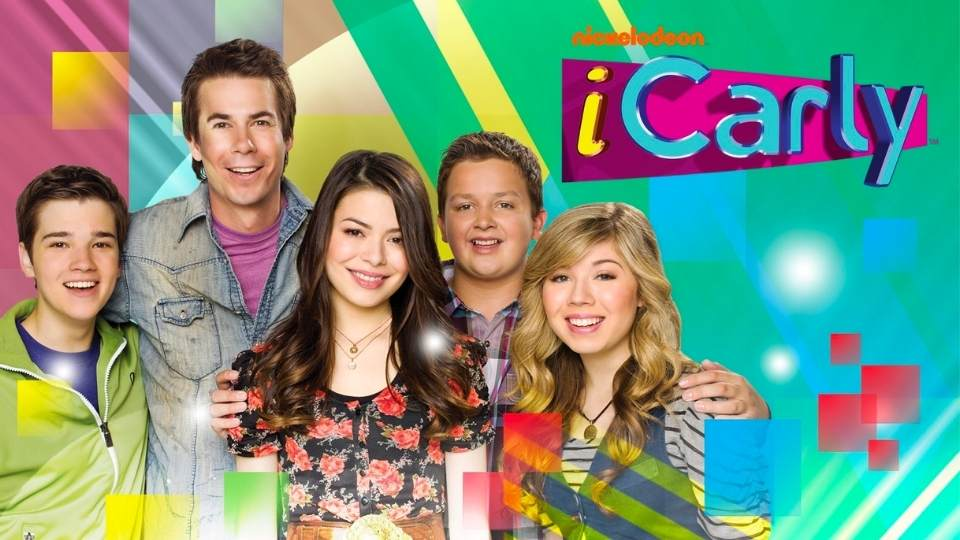
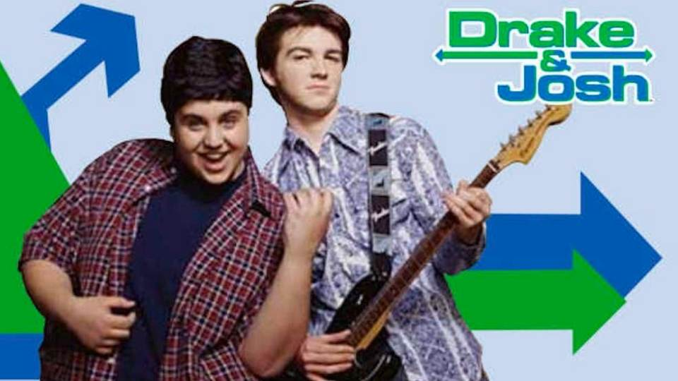

Y2K NOSTALGIA
Embracing 00's to 10's childhood and traveling back in time.
Scroll through to remember five iconic 10's music, shows and fashion.
_
My Top Five 10's Kids Shows:
(In No Particular Order)
_
1. Wizards of Waverly Place

_
2. That's So Raven

_
3. ICarly

_
4. Drake & Josh

_
5. Hannah Montana
_
[[ BACK TO HOME PAGE ]]
.